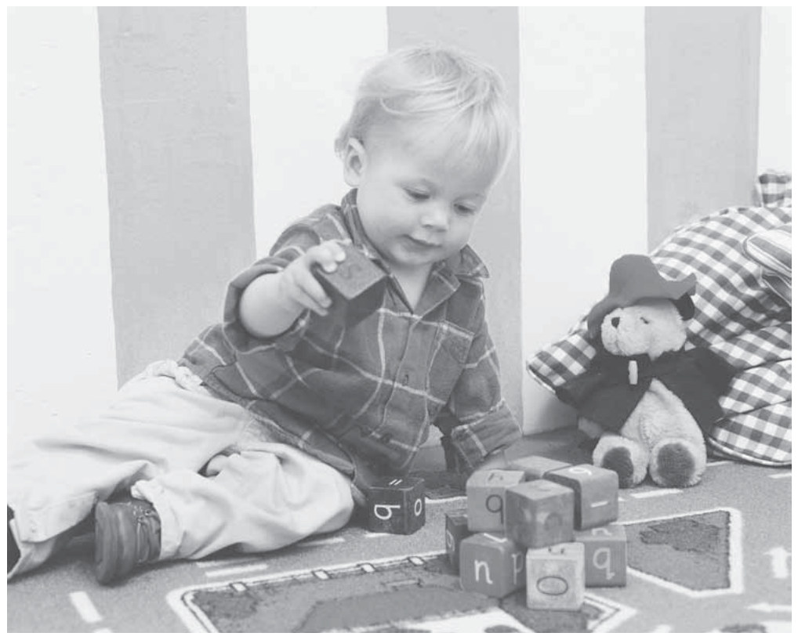
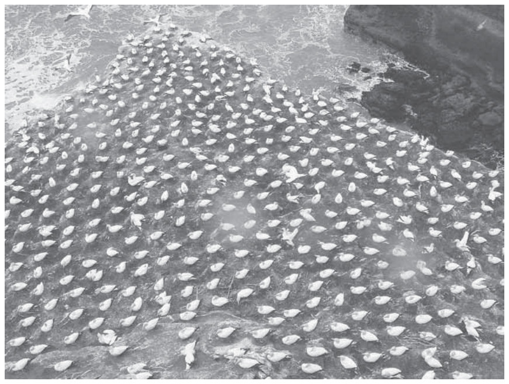
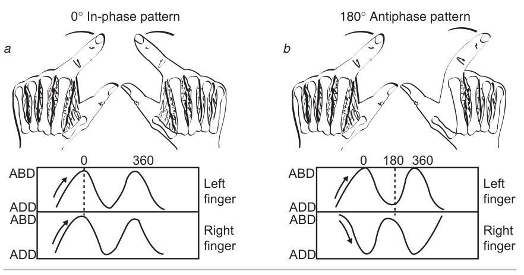
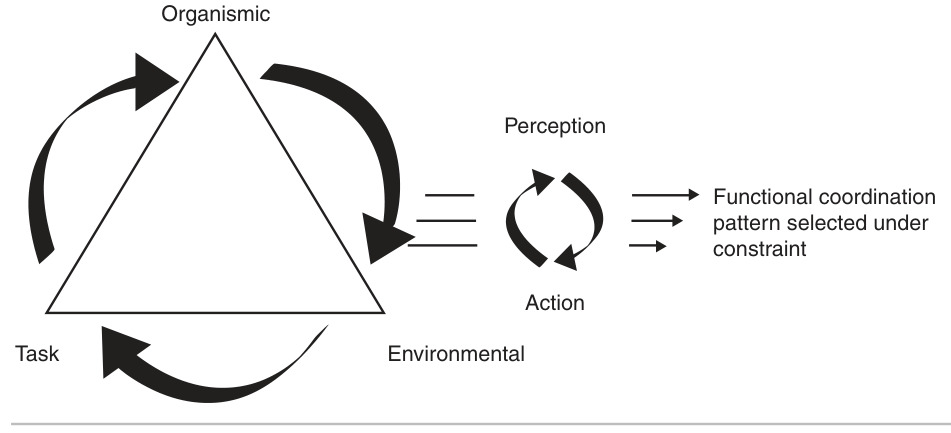
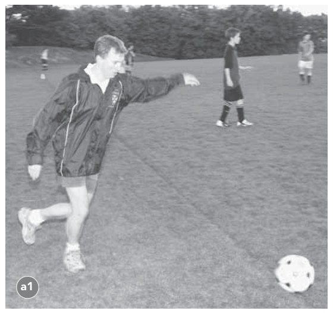
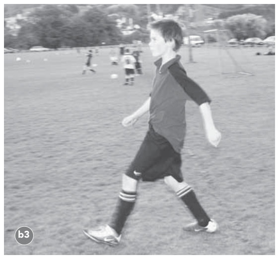
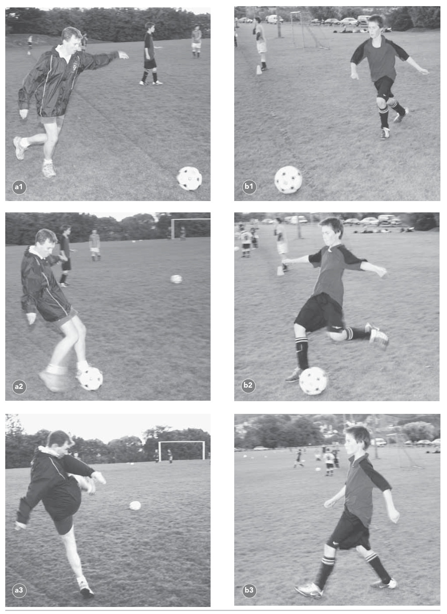
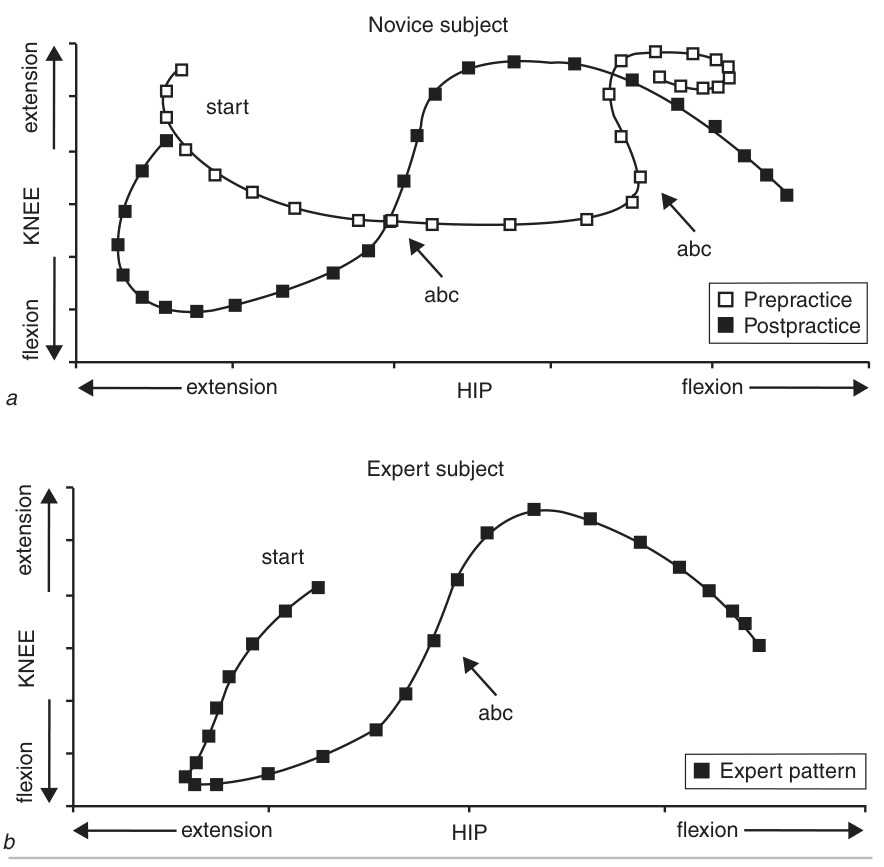
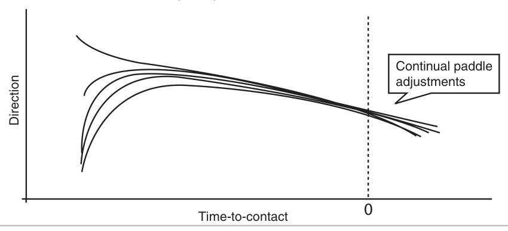

Chương 2 — Hướng tới lý thuyết động lực học
Ràng buộc vật lý
đối với phối hợp
Lý thuyết hệ thống động lực
chương 2
Danh mục chương
Hệ thống phức tạp: Định nghĩa
Đặc điểm của hệ thống phức tạp Hệ thống phức tạp như hệ thống động lực
Ràng buộc trong hệ thống phức tạp
Ràng buộc vật lý và ràng buộc thông tin Tự tổ chức và ràng buộc
Hành vi nổi lên trong vận động con người
Ràng buộc và phối hợp vận động
Ràng buộc cơ thể Ràng buộc môi trường Ràng buộc nhiệm vụ
Ràng buộc tương tác
Các quá trình phối hợp trong hệ thống vận động con người
Bernstein và vấn đề bậc tự do Cấu trúc phối hợp trong hành động: Đá một
Quả bóng đá
Vai trò chức năng của tính biến thiên trong hệ thống vận động
Tính biến thiên dưới ràng buộc nhiệm vụ động Tính biến thiên dưới ràng buộc nhiệm vụ tĩnh
Tóm tắt
© Johnny Buzzerio/Corbis

Trong chương này, chúng tôi giới thiệu các khái niệm từ lý thuyết hệ thống động lực như một phần của khung tham chiếu thay thế cho các lý thuyết truyền thống về tiếp thu kỹ năng được mô tả trong chương 1. Lý thuyết hệ thống động lực cung cấp một mô hình phù hợp để hiểu về phối hợp và kiểm soát vận động trong các hệ thống thần kinh sinh học. Cách tiếp cận này nhìn nhận người học như một hệ thống sinh học phức tạp, được cấu thành từ nhiều hệ thống con độc lập nhưng tương tác với nhau. Trong nhiều cấu trúc phức tạp, sự tương tác động giữa các thành phần thực sự có thể tăng cường tổ chức nội tại của hệ thống. Những tương tác này có thể tạo ra trật tự phong phú bên trong hệ thống thông qua một quá trình được gọi là tự tổ chức. Các quá trình tự tổ chức là ví dụ điển hình cho những khuynh hướng phối hợp vốn có trong nhiều hệ thống phức tạp và chịu ảnh hưởng của nhiều ràng buộc tác động lên hệ thống.
Chúng tôi bắt đầu phân tích bằng cách định nghĩa hệ thống phức tạp và giải thích cách người thực hiện con người là một hệ thống phức tạp. Sau đó, chúng tôi mô tả cách quá trình tiếp thu kỹ năng diễn ra thông qua các thuộc tính tự tổ chức của hệ thống vận động con người. Chúng tôi giải thích cách, trong quá trình thực hiện và học vận động, các thuộc tính tự tổ chức chịu tác động của một loạt ràng buộc định hình sự nổi lên của hành động phối hợp. Tự tổ chức dưới ràng buộc là một quá trình chính có thể được khai thác trong tiếp thu kỹ năng khi những người thực hành tạo ra các ràng buộc nhiệm vụ khuyến khích hành vi khám phá của người học. Theo nghĩa này, tính biến thiên vận động có thể đóng một vai trò chức năng trong việc giúp người học khám phá mức độ liên quan của các giải pháp phối hợp tiềm năng.
Hệ thống phức tạp: Định nghĩa
Lý thuyết hệ thống động lực nhấn mạnh sự cần thiết phải hiểu các hiện tượng tự nhiên như một hệ thống với nhiều bộ phận thành phần tương tác (ví dụ: Clarke & Crossland, 1985). Góc nhìn hệ thống cung cấp một lập luận xuất sắc cho việc nghiên cứu hành vi con người bởi vì
các cấu trúc và cấu hình của sự vật nên được xem xét như một chỉnh thể, thay vì được kiểm tra từng mảnh. Trong một hệ thống rất phức tạp như tâm trí hay cơ thể con người, tất cả các bộ phận đều ảnh hưởng lẫn nhau theo cách tinh vi, và việc nghiên cứu chúng riêng lẻ thường làm gián đoạn các tương tác thông thường của chúng đến mức một đơn vị bị cô lập có thể hành xử rất khác với cách nó hành xử trong bối cảnh bình thường của nó. (Clarke and Crossland, 1985, p. 16)
Thuật ngữ hệ thống phức tạp nghĩa là gì? Từ complex bắt nguồn từ từ tiếng Latin complexus, nghĩa là “dệt xen vào nhau”, và mô tả một mạng lưới gồm các bộ phận liên quan và tương tác. Như vậy, các hệ thống phức tạp là những hệ thống được tích hợp cao, được cấu thành từ nhiều bộ phận tương tác, trong đó mỗi bộ phận đều có khả năng ảnh hưởng đến các bộ phận khác.
Đặc điểm của hệ thống phức tạp
Các hệ thống phức tạp khá phổ biến trong đời sống hàng ngày. Ví dụ, thời tiết, dòng phương tiện giao thông ở một thành phố lớn, một bầy kiến, đội thể thao yêu thích của bạn, và thậm chí cả cơ thể của bạn cũng đều là những hiện tượng thể hiện tính phức tạp. Các hệ thống này chia sẻ một số thuộc tính cơ bản, bao gồm những điểm sau:
Nhiều bậc tự do (dfs) độc lập và biến thiên. Trong các khoa học vật lý, thuật ngữ bậc tự do thường chỉ các thành phần độc lập của một hệ thống có thể kết hợp với nhau theo nhiều cách khác nhau. Ví dụ, các diễn viên trong một đoàn múa, người lao động trong một tổ chức thương mại, và các cầu thủ trong một đội thể thao có thể được xem là những dfs độc lập của một thực thể lớn hơn. Tính phức tạp được đặc trưng bởi số lượng cấu hình tiềm năng sẵn có cho các bộ phận độc lập của hệ thống đó. Ví dụ, các thành viên của một đoàn múa có thể tham gia vào nhiều bài biểu diễn khác nhau, đòi hỏi các thành viên khác nhau đảm nhận các vai trò khác nhau. Các đoàn múa lớn hơn có khả năng thực hiện các bài biểu diễn đa dạng và phức tạp hơn, trong khi khả năng đa dạng và phức tạp của các đoàn nhỏ hơn thì thấp hơn (xem Newell & Vaillancourt, 2001). Nhiều cấp độ khác nhau trong hệ thống. Ví dụ bao gồm các cấp độ thần kinh, nội tiết tố, cơ sinh học và tâm lý trong cơ thể con người. Khả năng phi tuyến của hành vi (vì các bộ phận thành phần có thể tương tác theo nhiều cách khác nhau). Ví dụ bao gồm các đỉnh và đáy không thể đoán trước trên thị trường tài chính, hay những giai đoạn đỉnh cao và suy giảm hiệu suất của một vận động viên hoặc một đội thể thao. Khả năng các mối quan hệ mẫu hình ổn định và không ổn định giữa các bộ phận của hệ thống hình thành thông qua sự tự tổ chức của hệ thống (các bộ phận tự điều chỉnh và thích nghi với nhau). Khả năng các thành phần hệ thống con hạn chế hoặc ảnh hưởng đến hành vi của các hệ thống con khác (xem Gleick, 1987; Kaplan & Glass, 1995; Kauffman, 1993, 1995; Waldrop, 1992; Yates, 1979).
Hệ thống phức tạp như hệ thống động lực
Khi chúng ta xem xét các vi thành phần của một hệ thống phức tạp, chúng ta quan sát thấy những tương tác và dao động liên tục. Các tương tác giữa các bộ phận riêng lẻ của hệ thống có vẻ ngẫu nhiên, và tiềm ẩn khả năng có nhiều sự hỗn loạn trong toàn bộ hệ thống. Ví dụ, hãy nghĩ đến các phân tử nước trong một dòng suối, các nơ-ron trong hệ thần kinh, hay các tế bào máu riêng lẻ trong cơ thể con người. Những vi thành phần này có thể tương tác theo những cách không thể đoán trước và do đó dẫn đến sự hỗn loạn của hệ thống, chẳng hạn như khi dòng chảy của các phân tử nước trở nên không thể đoán sau sự nhiễu loạn, hoặc khi các nơ-ron ở vỏ não bị ánh sáng nhấp nháy kích thích phát tín hiệu ngẫu nhiên, gây co giật ở những người bị động kinh. Tuy nhiên, phân tích ở cấp độ vĩ mô (quy mô lớn) lại cho thấy các mẫu hình hành vi có trật tự một cách đáng ngạc nhiên (Kauffman, 1993, 1995). Ở cấp độ phân tích này, các hệ thống phức tạp thể hiện các khuynh hướng phối hợp, vì các thành phần riêng lẻ có khả năng liên kết với nhau để đi vào và ra khỏi các mẫu hình hoặc sự hiệp đồng chức năng và mạch lạc (Haken, 1996; Kelso & Engström, 2006).
Chìa khóa để hiểu hành vi của các hệ thống phức tạp liên quan đến cách phối hợp diễn ra giữa một số lượng rất lớn các bộ phận thành phần. Lý thuyết hệ thống động lực đón nhận thách thức này bằng cách rút ra các mô tả toán học phi tuyến để đặc trưng hóa trật tự nổi lên bên trong các hệ thống phức tạp. Van Gelder và Port (1995) đưa ra một định nghĩa rộng rãi về hệ thống động lực là “bất kỳ hệ thống nào được xác định bởi trạng thái, với một không gian pha số học và một quy tắc tiến hóa (bao gồm các phương trình vi phân và các ánh xạ rời rạc) xác định các quỹ đạo trong không gian đó” (p. 9). Không gian pha số học đề cập đến tất cả các trạng thái tổ chức giả định mà một hệ thống động lực có thể tiến hóa tới. Trong các hệ thống vận động sinh học, những trạng thái này tương ứng với các mẫu hình phối hợp.
Vì là những hệ thống tương đối mở, các hệ thống động lực có thể đảm nhận các trạng thái tổ chức khác nhau và khai thác các nguồn năng lượng xung quanh để hình thành các mẫu hình tổ chức ổn định. Trong tự nhiên, các hệ thống mở có khả năng tiếp nhận và đầu ra năng lượng vào các dòng chảy bao quanh chúng, nghĩa là chúng nhạy cảm với những thay đổi trong môi trường xung quanh. Các mẫu hình tổ chức ổn định và chức năng mà hệ thống mở thể hiện được gọi là các điểm hút. Ví dụ, trong một hệ thống vật lý được tạo thành từ hàng tỷ phân tử nước trong một dòng suối, điểm hút là một vùng ổn định trong không gian trạng thái của hệ thống, nơi vectơ lực tổng hợp (tức là hướng và độ lớn của bất kỳ lực tương tác nào trên dòng chảy của hệ thống) hội tụ về một giá trị cực tiểu (ví dụ như trong một xoáy nước).
Tình huống này tạo ra một trạng thái tổ chức ổn định cho bất kỳ hệ thống nào, gợi ý rằng cần một lực nhiễu loạn lớn để làm mất ổn định trật tự cụ thể của hệ thống tại thời điểm đó (ví dụ, một dòng xoáy nhỏ hoặc một dòng chảy mạnh tác động lên một xoáy nước) (Kugler, Shaw, Vincente, & Kinsella-Shaw, 1990). Trong các hệ thống thần kinh sinh học, các điểm hút đại diện cho các khuynh hướng phối hợp giữa các thành phần của hệ thống và xấp xỉ tương đương với các mẫu hình phối hợp chức năng trong vốn hành động của một hệ thống vận động. Một ví dụ hay về các khuynh hướng phối hợp là sự di chuyển ở người khi hai chân của người chạy phối hợp thành một mẫu hình ngược pha (khi một chân ở giai đoạn đỡ cơ thể, chân kia ở giai đoạn bay, cho phép trọng lực gia tốc tâm khối lượng của người chạy trong một chuỗi những cú ngã được kiểm soát).
Ràng buộc trên hệ thống phức tạp
Trong các hệ thống phức tạp, các trạng thái trật tự nổi lên dưới ràng buộc. Ý tưởng này được du nhập vào khoa học vận động con người từ vật lý học và sinh học, nơi các nhà khoa học đã tham gia nghiên cứu sự nổi lên của các hành vi vận động dưới ràng buộc (ví dụ: Kelso, 1995; Kugler, 1986; Kugler & Turvey, 1987). Newell (1986) đề xuất ý tưởng về ràng buộc như những ranh giới hay đặc điểm hạn chế chuyển động của các bộ phận li ti của một hệ thống. Nói cách khác, ràng buộc là vô số biến số xác định không gian pha của một hệ thống phức tạp.
Ràng buộc vừa hạn chế vừa cho phép số lượng quỹ đạo hành vi mà hệ thống có thể đảm nhận (xem hình 2.1). Có vẻ như các hệ thống phức tạp có thể khai thác các ràng buộc bao quanh chúng để cho phép các mẫu hình hành vi chức năng nổi lên trong những bối cảnh cụ thể. Ví dụ, một bầy gồm hàng triệu côn trùng tránh hành vi ngẫu nhiên bằng cách khai thác ràng buộc thông tin do các pheromone mà chúng tiết ra vào mặt đất mang lại, để dẫn dắt hoạt động xây tổ phối hợp của chúng (Kugler & Turvey, 1987). Ngay lập tức, chúng ta có thể thấy quá trình hành vi nổi lên này hữu ích như thế nào nếu chúng ta muốn thích ứng các chuyển động của mình với những bối cảnh thực hiện không ngừng thay đổi, hoặc với những thay đổi trong hệ thống cơ-xương do lão hóa hay chấn thương (Davids, Button, Araújo, Renshaw, & Hristovski, 2006).
Ràng buộc vật lý và ràng buộc thông tin
Ràng buộc có thể là vật lý hoặc thông tin. Ràng buộc vật lý có thể mang tính cấu trúc hoặc chức năng trong hệ thống vận động con người. Ví dụ, kích thước và sức nắm của bàn tay một đứa trẻ là những ràng buộc vật lý mang tính cấu trúc ảnh hưởng đến cách đứa trẻ đó có thể nhặt và thao tác với một vật chẳng hạn như một
Hình 2.1: Ràng buộc xác định không gian pha của một hệ thống phức tạp và vừa hạn chế vừa cho phép các quỹ đạo hành vi khác nhau mà hệ thống có thể đảm nhận.
Vận tốc (x)·
Vị trí (x)

tàu đồ chơi hay một quả bóng lớn trong lúc chơi. Ràng buộc vật lý chức năng bao gồm các quá trình như phản ứng và năng lực tri giác, hỗ trợ hiệu suất vận động. Mặt khác, ràng buộc thông tin là các dạng năng lượng khác nhau chảy qua hệ thống, chẳng hạn như pheromone ở côn trùng, ánh sáng phản xạ từ một chiếc tàu đồ chơi, hay sóng âm mà một đứa trẻ cảm nhận được khi quả bóng nảy trên sàn. Trẻ nhỏ khám phá các ràng buộc thông tin xúc giác (chạm) khi chúng nhặt và chơi với các vật trong môi trường của mình. Ràng buộc thông tin giúp định hình các đáp ứng vận động cần thiết và hỗ trợ phối hợp các hành động liên quan đến môi trường động.
Tự tổ chức và ràng buộc
Như đã lưu ý trước đó, các hệ thống mở phức tạp có khả năng trao đổi năng lượng với môi trường. Một ví dụ điển hình về hệ thống mở phức tạp trong tự nhiên là hệ thống thời tiết, hành vi của nó thường khó dự đoán hơn vài ngày trước. Các hệ thống thời tiết có thể chứa lượng năng lượng khác nhau do các dòng không khí thay đổi về áp suất và sự di chuyển của các phân tử nước từ
Kích thước và sức nắm của bàn tay một đứa trẻ là những ràng buộc vật lý mang tính cấu trúc ảnh hưởng đến cách đứa trẻ đó nhặt một món đồ chơi.
© Photodisc

các đại dương đến những đám mây rồi quay lại. Đạt được và duy trì sự ổn định là một thách thức đối với các hệ thống mở phức tạp vì khả năng tương tác với môi trường của chúng. Vấn đề với hệ thống thời tiết là một thay đổi nhỏ trong các dòng năng lượng bao quanh nó có thể gây ra những dao động quy mô lớn trong đầu ra của hệ thống vào một thời điểm, nhưng lại có tác động nhỏ vào những thời điểm khác, bởi năng lượng tồn tại bên trong hệ thống không bao giờ là không đổi.
Với các định luật đã được thiết lập từ lâu của nhiệt động học phi tuyến, vốn dự đoán xu hướng hướng tới entropy hay sự hỗn loạn trong tự nhiên, làm thế nào chúng ta có thể giải thích mức độ trật tự đáng ngạc nhiên tồn tại ở cấp độ vĩ mô trong nhiều hệ thống phức tạp? Để trả lời câu hỏi đó, chúng ta cần xem xét cách các hệ thống mở trong tự nhiên có thể khai thác năng lượng được tạo ra từ sự tương tác giữa các thành phần của chúng ở cấp độ cục bộ (vi mô) để duy trì trật tự của hệ thống ở cấp độ vĩ mô. Khả năng của một hệ thống mở phức tạp trao đổi năng lượng và vật chất với môi trường mang lại cho nó những khuynh hướng tự nhiên đi vào các điểm hút hay các mẫu hình tổ chức ổn định; nghĩa là, nó có thể tận dụng quá trình vật lý mà chúng ta đã đề cập trước đó là tự tổ chức.
Tóm lại, các hệ thống sinh học, chẳng hạn như bầy chim, bầy côn trùng, hay đàn cá, dường như đã tiến hóa được khả năng sử dụng năng lượng môi trường để duy trì những giai đoạn ổn định có chức năng mang lại lợi ích cho toàn bộ hệ thống (để xem một ví dụ rất hay về bầy kiến, xem Gordon, 2007). Những hệ thống này có thể
Trật tự tự tổ chức trong các hệ thống sinh học được minh họa bằng việc chim gannet làm tổ ở Vườn quốc gia Muriwai, phía tây Auckland, New Zealand. Mặc dù trật tự làm tổ có vẻ được sắp xếp chỉn chu, hành vi chức năng này nổi lên vì nó bảo vệ chống lại những kẻ săn mồi tiềm tàng trong mùa làm tổ. Ngoài mùa làm tổ, những con chim này có xu hướng hay cãi nhau và không giữ khoảng cách gần như vậy.
© Ian

tìm kiếm và đi vào các điểm hút chức năng vì chúng có khuynh hướng hình thành mẫu hình (ví dụ: Prigogine & Stengers, 1984). Ở chim và cá, khuynh hướng phối hợp tự phát này biểu hiện thành hành vi tụ đàn. Ví dụ, ở chim đang bay, mẫu hình tụ đàn hình chữ V rất phổ biến vì nó có lợi cho việc định hướng của cả bầy mà không cần một con chim nào đóng vai trò tác nhân kiểm soát chỉ đạo đường bay. Tương tự, chim biển áp dụng cách sắp xếp làm tổ có mẫu hình rõ rệt (khoảng cách giữa các tổ chừng bằng chiều dài của một con chim) trong mùa giao phối mà không cần một con chim chủ chốt nào quy định khoảng cách. Cá bơi ngẫu nhiên khi tiến hành các hoạt động hàng ngày quan trọng như kiếm ăn hay giao phối, nhưng chúng tập hợp thành những đàn đồng bộ cao khi có kẻ săn mồi xuất hiện.
Tất cả những ví dụ này cho thấy sự mở của một hệ thống đối với các dòng năng lượng xung quanh là hữu ích, vì năng lượng là nguồn thông tin đóng vai trò là ràng buộc trên hệ thống. Ràng buộc thông tin này có lợi cho hệ thống bằng cách hỗ trợ các mẫu hình hành vi chức năng và ổn định trong những khoảng thời gian tương đối ngắn. Dạng ổn định động này, được gọi là siêu ổn định (metastability) (Kelso & Engström, 2006), hữu ích trong những môi trường phức tạp, biến động. Chúng ta sẽ khám phá ảnh hưởng của ràng buộc thông tin chi tiết hơn ở chương 3.
Trong nghiên cứu về các hệ thống mở, các nhà khoa học đã quan tâm đến các chuyển tiếp pha có thể nổi lên tự phát trong các hệ thống phức tạp. Chuyển tiếp pha là sự di chuyển của các vi thành phần của một hệ thống vào và ra khỏi các trạng thái tổ chức khác nhau. Ví dụ, trong hệ thống thời tiết, động lực học giữa các thành phần của hệ thống thường không dẫn đến những thay đổi quy mô lớn trong hành vi của hệ thống. Chỉ có rất nhiều dao động tiềm ẩn ảnh hưởng nhẹ đến sự ổn định của hệ thống. Tuy nhiên, những thay đổi quan trọng trong các trường năng lượng bao quanh hệ thống, chẳng hạn như áp suất khí quyển tăng lên trong một hệ thống thời tiết, có thể làm thay đổi sự ổn định của hệ thống và dẫn đến những thay đổi vĩ mô và tổ chức lại thành một trạng thái khác (bão sấm sét ở vùng nhiệt đới). Chuyển tiếp pha tạo nên nền tảng của tự tổ chức trong các hệ thống phức tạp, và các ví dụ về những sự hình thành mẫu hình như vậy đã được quan sát thấy trong các hệ thống mở sinh học, vật lý và hóa học, chẳng hạn như khi cá đang bơi ngẫu nhiên tập hợp thành một đàn đồng bộ khi có kẻ săn mồi lại gần.
Hành vi nổi lên trong vận động con người
Tự tổ chức là một quá trình mạnh mẽ có thể giúp chúng ta thích ứng các mẫu hình phối hợp vận động với những hoàn cảnh môi trường thay đổi, chẳng hạn như thực hiện các cú đánh tennis trên các mặt sân khác nhau hay lái xe trong điều kiện giao thông thay đổi. Làm thế nào để chúng ta khai thác quá trình tự nhiên này? Trước hết, tự tổ chức trong các hệ thống phức tạp không phải là một quá trình hoàn toàn mù quáng, trong đó bất kỳ mẫu hình ngẫu nhiên nào cũng có thể hình thành. Thường thì một hệ thống động lực chỉ đảm nhận ít trạng thái tổ chức, và nghiên cứu đã chỉ ra rằng chúng ta không giỏi tạo ra các mẫu hình ngẫu nhiên của hành vi vận động. Ví dụ, Newell, Deutsch, Sosnoff, và Mayer-Kress (2006) đã lập luận rằng việc tạo ra các dao động ngón tay ngẫu nhiên là một nhiệm vụ khó đối với con người, và khả năng tạo ra đầu ra không cấu trúc kém hơn ở các hệ thống hiệu ứng vận động lớn hơn, chẳng hạn như chân và tay. Ngay cả khi các cá nhân có thể luyện tập các chuyển động ngẫu nhiên trong 5 ngày, rất ít cải thiện được quan sát thấy (Newell, Deutsch, & Morrison, 2000), cung cấp bằng chứng về ràng buộc cấu trúc và chức năng đáng kể trên các dfs động của hệ thống vận động con người (Newell & Vaillancourt, 2001).
Những phát hiện này ủng hộ nhận định rằng các hệ thống động lực tự nhiên có xu hướng chỉ cư ngụ ở một số vùng nhất định trong toàn bộ cảnh quan của mọi trạng thái có thể mà một hệ thống có thể giả định (tức là không gian trạng thái) (Kauffman, 1993, 1995). Loại trật tự nổi lên trong hành vi của một hệ thống phụ thuộc rất nhiều vào các điều kiện môi trường hiện có và các ràng buộc định hình hành vi đó (xem Nghiên cứu tiêu điểm).
Nghiên cứu tiêu điểm
TỪ KHỞI ĐẦU KHIÊM TỐN ĐẾN MÔ HÌNH HKB
Khi Scott Kelso công bố loạt nghiên cứu của mình (1981, 1984) xem xét những thay đổi trong phối hợp giữa các chuyển động ngón tay nhịp nhàng, có lẽ ông đã không dự đoán được ý tưởng của mình sẽ trở nên quan trọng đến mức nào trong các khoa học về vận động con người. Trong công trình ban đầu, Kelso đã kiểm tra động lực học phối hợp tự phát nổi lên từ các dao động tương đối giữa ngón trỏ trái và phải của một số người tham gia nghiên cứu trong các chuyển động nhịp nhàng. Đáng ngạc nhiên, mỗi người tham gia đều thể hiện sự chuyển đổi tự phát giữa các mẫu hình phối hợp khi tần số chuyển động ngón tay bị ràng buộc bởi nhịp của một máy đếm nhịp (tức là tăng dần từ 1,25 lên 3,5 hertz).
Kết quả nhất quán cho thấy pha tương đối giữa các ngón tay chỉ thể hiện sự ổn định trong động lực học phối hợp của hệ thống ở hai vùng điểm hút riêng biệt: các ngón tay dao động cùng pha (các ngón tay cùng di chuyển về phía đường giữa của cơ thể) hoặc ngược pha (một ngón tay di chuyển về phía đường giữa của cơ thể trong khi ngón kia di chuyển ra xa đường giữa) (xem hình 2.2). Pha tương đối của bất kỳ hai hệ thống dao động nào (ví dụ, mỗi chân dùng khi đi bộ) là độ trễ pha trong chu kỳ chuyển động của hệ thống này so với hệ thống kia. Khi những người tham gia nghiên cứu bắt đầu dao động theo mẫu hình ngược pha, cuối cùng họ chuyển sang mẫu hình cùng pha khi tần số máy đếm nhịp tăng lên. Những chuyển tiếp pha đột ngột từ trạng thái phối hợp này sang trạng thái khác không phải do một sự thay đổi có chủ đích nào đó do người tham gia quy định gây ra, mà thông qua các thuộc tính tự tổ chức của hệ thống vận động.
Haken, Kelso, và Bunz (1985) đã đề xuất một mô hình toán học — mô hình HKB — chứng minh một cách chính thức cách hành vi vận động quan sát được trong mô hình dao động ngón tay có thể nổi lên khi hàm tiềm năng của hệ thống vận động thay đổi. Mô hình chứng minh rằng việc thay đổi quy mô của một thông số kiểm soát (ví dụ, tần số nhịp của máy đếm nhịp) có thể dẫn đến giảm độ ổn định của thông số trật tự (ví dụ, pha tương đối
(TIẾP THEO)
của chuyển động ngón tay). Hành vi này là kết quả của sự thay đổi năng lượng tiềm năng của hệ thống, mà Haken và các cộng sự đã mô hình hóa thành hai mẫu hình vận động ổn định. Khi một thông số kiểm soát thay đổi, cảnh quan điểm hút bị biến dạng và hành vi của hệ thống chuyển từ tổ chức kém ổn định nhất (ngược pha) sang ổn định nhất (cùng pha). Trong những môi trường năng động hơn, nơi có các lực ngẫu nhiên, mức độ ổn định của hệ thống liên quan đến mức độ dao động mà hệ thống vận động thể hiện (Haken, 1996; Schöner, Haken, & Kelso, 1987).
Mô hình HKB cũng có điều thú vị để nói về các đặc điểm quan trọng khác của hệ thống vận động động lực, chẳng hạn như mối quan hệ giữa độ ổn định của điểm hút và thời gian phục hồi, là tốc độ mà hệ thống trở về một điểm hút (mẫu hình vận động ổn định) sau một nhiễu loạn bên ngoài. Thời gian phục hồi đã được dùng để kiểm tra độ ổn định của các điểm hút trong nhiều tình huống (ví dụ: Court, Bennett, Williams, & Davids, 2002, 2005; Scholz & Kelso, 1989). Kể từ công trình mang tính đổi mới của Haken, Kelso và Bunz, các nhà nghiên cứu đã phát hiện những khuynh hướng phối hợp tương tự, chẳng hạn như chuyển tiếp, đa ổn định và độ nhạy với tần số và biên độ, ở rất nhiều chuyển động nhịp nhàng. Mặc dù có vẻ như các nhiệm vụ nhịp nhàng khác nhau có thể có các hàm tiềm năng khác nhau và do đó có các chế độ điểm hút khác nhau, nhưng các nguyên lý tự tổ chức vẫn như nhau. Từ những khởi đầu tương đối đơn giản, một mô hình mới để nghiên cứu hành vi vận động đã ra đời.
ỨNG DỤNG
Hãy tái tạo mô hình ban đầu của Kelso. Dao động các ngón tay theo cách ngược pha, tăng tốc độ dần dần, và khám phá các khuynh hướng tự tổ chức của chính hệ thống vận động của bạn. Hãy liệt kê một số thông số kiểm soát có thể ảnh hưởng đến thời điểm chuyển tiếp xảy ra.
Hình 2.2: Trong các chuyển động được thực hiện trong thí nghiệm ban đầu của Kelso (1981, 1984), (a) chúng ta có thể quan sát mẫu hình cùng pha 0°, và (b) chúng ta có thể quan sát mẫu hình ngược pha 180°. Những mẫu hình này được cho là vốn ổn định trong các chuyển động nhịp nhàng, hai tay. (ABD = các chuyển động giạng ra; ADD = các chuyển động khép lại.)
Được in lại, theo sự cho phép, từ S.A. Wallace, 1996, Dynamic pattern perspective of rhythmic movement: An introduction. Trong Advances in motor learning and control, do H.N. Zelaznik biên tập (Champaign, IL: Human Kinetics), 170.
NGHIÊN CỨU TIÊU ĐIỂM (TIẾP THEO)
ABD
ADD ABD
ADD
Ngón tay trái
Ngón tay phải
0 360
0o Mẫu hình cùng pha
ABD
ADD ABD
ADD
Ngón tay trái
Ngón tay phải
0 360 180
180o Mẫu hình ngược pha

Bài tập trong phần ứng dụng của Nghiên cứu tiêu điểm không chỉ là một trò tiêu khiển vô bổ; nó có ý nghĩa nhất định khi nghiên cứu phối hợp vận động. Hãy xem xét, ví dụ, cách tư thế cơ thể của một người trượt tuyết có thể tự tổ chức để tạo ra một cú chuyển hướng được canh thời điểm hoàn hảo trên đường trượt. Bởi tính chất đòi hỏi khắt khe của đường trượt, hành động của người trượt tuyết có thể không được xác định từ trước. Thay vào đó, cả ràng buộc bên trong như cấu trúc giải phẫu của người trượt, và ràng buộc bên ngoài như thông tin thị giác và sự tiếp xúc của ván trượt với tuyết, đều ảnh hưởng đến sự nổi lên của các mẫu hình vận động chính xác của người trượt trên đường trượt (ví dụ: Bernstein, 1967; Warren, 1990). Một thay đổi trong điều kiện môi trường, chẳng hạn như độ dốc của sườn đồi, hướng gió, hay một vùng băng giá, có thể ảnh hưởng đáng kể đến các mẫu hình phối hợp vận động hiện có. Ví dụ, một sườn dốc thường buộc một người trượt mới bắt đầu phải áp dụng mẫu hình di chuyển ngang qua lại trên đường trượt. Bằng cách dịch chuyển phân bổ trọng lượng lên ván trượt bên trong và thay đổi căn chỉnh của hai ván, người trượt không tạo ra tốc độ xuống dốc quá lớn. Chiến lược này mang lại một giải pháp đặc thù cho nhiệm vụ mà không làm mất đáng kể sự ổn định tư thế.
Ràng buộc và phối hợp vận động
Hàm ý của những ý tưởng chúng ta đã thảo luận cho đến nay là cảm nhận, ký ức, ý định, kế hoạch và hành động có thể không nên được quan niệm tốt nhất như những thực thể được lưu trữ trong CNS. Thay vào đó, chúng có thể được hiểu tốt hơn như các mẫu hình vĩ mô tự tổ chức được hình thành bởi sự tương tác của nhiều thành phần hệ thống và các ràng buộc then chốt trong môi trường (Kelso, 1995; Kugler & Turvey, 1987). Ví dụ, các thành phần hệ thống có thể là các nơ-ron trong não cùng phát tín hiệu để hình thành ý tưởng, ký ức hay kế hoạch, hoặc chúng có thể liên quan đến các nhóm cơ băng qua nhiều khớp để hình thành các mẫu hình phối hợp. Ràng buộc
Cả ràng buộc bên trong và bên ngoài đều định hình sự nổi lên của các mẫu hình vận động chính xác của người trượt trên đường trượt. Một thay đổi trong điều kiện môi trường cũng có thể ảnh hưởng đáng kể đến các mẫu hình phối hợp vận động hiện có.
© Eyewire/Photodisc/Getty Images
đóng vai trò trung tâm trong quá trình tự tổ chức của hệ thống vận động con người. Cách giải thích theo hệ thống động lực nhấn mạnh các ràng buộc môi trường và vật lý cũng như các ràng buộc cá nhân như nhận thức, ký ức và ý định của mỗi người (Williams, Davids, & Williams, 1999).
Theo Newell (1986), ràng buộc có thể được phân thành ba loại: ràng buộc cơ thể, ràng buộc môi trường và ràng buộc nhiệm vụ. Những loại này cung cấp một khung lý thuyết mạch lạc để hiểu cách các mẫu hình phối hợp nổi lên trong hành vi hướng đến mục tiêu (xem hình 2.3).
Ràng buộc cơ thể
Ràng buộc cơ thể đề cập đến các đặc điểm của một người, chẳng hạn như gen, chiều cao, cân nặng, tỷ lệ cơ–mỡ, độ mạnh liên kết của các synap trong não, nhận thức, động lực và cảm xúc. Những kiểu suy nghĩ quen thuộc, mức độ luyện tập, hay khiếm khuyết thị giác có thể đóng vai trò là ràng buộc cơ thể định hình cách một người tiếp cận một mục tiêu thực hiện cụ thể. Những đặc điểm độc đáo này đại diện cho các nguồn lực được huy động để giải quyết vấn đề nhiệm vụ, hoặc những hạn chế có thể dẫn đến sự thích nghi đặc thù cho từng cá nhân. Một điểm khác biệt then chốt giữa nhiều sinh vật sinh học và con người là con người có thể sử dụng các nguồn năng lượng bên trong để cố ý ràng buộc hành động của mình nhằm đạt được mục tiêu hay kết quả mong muốn. Nghĩa là, hành vi con người không mang tính quyết định mà có thể được điều khiển có chủ đích (Kugler et al., 1990).
Ràng buộc môi trường
Ràng buộc môi trường là các biến số vật lý mang tính toàn cục trong tự nhiên, chẳng hạn như ánh sáng môi trường, nhiệt độ hay độ cao. Trên Trái Đất, trọng lực là một ràng buộc môi trường then chốt đối với phối hợp vận động trong mọi nhiệm vụ, như ví dụ về người trượt tuyết băng qua sườn núi dốc đã cho thấy. Xét lại người trượt tuyết của chúng ta
Hình 2.3: Ba loại ràng buộc — cơ thể, môi trường và nhiệm vụ — cung cấp một khung lý thuyết mạch lạc để hiểu cách các mẫu hình phối hợp nổi lên trong hành vi hướng đến mục tiêu.
Cơ thể
Nhận thức
Mẫu hình phối hợp chức năng được chọn dưới ràng buộc
Hành động
Môi trường Nhiệm vụ

một lần nữa, chúng ta có thể dùng dòng thị giác do một gò tuyết (mogul) trên đường trượt tạo ra để điều chỉnh các mô-men xoắn phát sinh qua các khớp hông và gối. Những gò tuyết lớn hơn buộc người trượt phải uốn hông và gối để hấp thụ phản lực truyền vào chân, và nhiệt độ môi trường có thể ảnh hưởng đến đặc tính cơ bắp của người trượt. Bên cạnh đó, một số ràng buộc môi trường mang tính xã hội thay vì vật lý, bao gồm sự hỗ trợ của gia đình, nhóm bạn bè, kỳ vọng của xã hội, các giá trị và chuẩn mực văn hóa (Haywood & Getchell, 2005).
Ràng buộc nhiệm vụ
Ràng buộc nhiệm vụ thường đặc thù hơn cho bối cảnh thực hiện so với ràng buộc môi trường, và bao gồm mục tiêu nhiệm vụ, các quy tắc cụ thể liên quan đến một hoạt động, dụng cụ hay công cụ liên quan đến hoạt động, bề mặt, khu vực mặt đất, và mặt sân cùng các dấu hiệu ranh giới như lưới, vạch kẻ và cột. Ngay cả với những hoạt động tưởng chừng ổn định, chẳng hạn như chơi nhạc cụ hay vung gậy golf, hành vi vận động vẫn có thể dao động vì ràng buộc nhiệm vụ có thể thay đổi từ lần thực hiện này sang lần khác. Ví dụ, các nhạc sĩ phải thích ứng với việc chơi trong những không gian khác nhau (ví dụ, phòng hòa nhạc nhỏ, hội trường lớn, địa điểm ngoài trời), mỗi nơi có âm thanh, hệ thống âm thanh và bố trí sân khấu riêng. Đôi khi họ thậm chí phải thích ứng với việc biểu diễn bằng những nhạc cụ khác nhau, điều có thể ảnh hưởng đến các sắc thái của hiệu suất.
Mặc dù chơi nhạc cụ được xem là một hoạt động rất ổn định, hành vi vận động của nhạc sĩ có thể dao động vì ràng buộc nhiệm vụ có thể thay đổi từ lần biểu diễn này sang lần khác.
© Jim Whitmer

Khả năng thay đổi hiệu suất vận động theo các bối cảnh hành động khác nhau là một phần không thể thiếu của tiếp thu kỹ năng, và học thích ứng cho phép con người đối phó với những ràng buộc nhiệm vụ mới lạ khi điều kiện thực hiện thay đổi. Để khuyến khích tính linh hoạt và khả năng thích ứng ở bệnh nhân, các nhà vật lý trị liệu thường điều chỉnh các ràng buộc nhiệm vụ. Ví dụ, một nhà trị liệu có thể khuyến khích một bệnh nhân ngồi xe lăn di chuyển qua một khu vực kín đông đúc và lộn xộn nhằm cải thiện khả năng kiểm soát và điều khiển xe lăn của bệnh nhân. Những cách luyện tập như vậy cũng khuyến khích bệnh nhân khám phá các giải pháp phối hợp thay thế, từ đó tối ưu hóa các kỹ thuật trong những kỹ năng vận động hằng ngày.
Ràng buộc tương tác
Trong hoạt động hướng đến mục tiêu, sự tương tác giữa các ràng buộc cơ thể, môi trường và nhiệm vụ lên hệ thống thần kinh–cơ bắp dẫn đến sự nổi lên của các trạng thái phối hợp khác nhau, vốn được tối ưu hóa thông qua luyện tập và kinh nghiệm. Ví dụ, cách một người hướng dẫn leo núi vượt qua một vách đá là kết quả của nhiều ràng buộc tại cùng một thời điểm, bao gồm gen, mức độ bền bỉ thể chất và tình trạng chấn thương của người leo; bản chất của bề mặt leo; và mục tiêu tổng thể của người leo như lên tới đỉnh nhanh nhất có thể hay chỉ dẫn cho học viên một đường leo an toàn.
Vì ba loại ràng buộc có thể tương tác với nhau, đôi khi khó phân biệt chúng. Ví dụ, ràng buộc môi trường bao gồm các dòng năng lượng xung quanh (ví dụ, ánh sáng môi trường), trong khi bản chất cụ thể của các nguồn thông tin là một ràng buộc nhiệm vụ then chốt đối với người học (ví dụ, ánh sáng phản xạ từ tường và đáy của một bể bơi). Trong cả hai ví dụ, các dòng năng lượng xung quanh là như nhau, nhưng ràng buộc nhiệm vụ khác nhau dẫn đến các nguồn thông tin cụ thể trở nên hữu ích trong những bối cảnh thực hiện khác nhau.
Một ý tưởng then chốt khác từ nghiên cứu về các hệ thống phi tuyến là ràng buộc trên hành vi không hề vĩnh cửu (Guerin & Kunkle, 2004). Nghiên cứu đã dạy chúng ta rằng ràng buộc trên hiệu suất vận động thường là tạm thời, và trong các tương tác người thực hiện–người thực hiện hay người thực hiện–môi trường, chúng có thể mạnh lên hoặc suy yếu theo những thang thời gian khác nhau. Ví dụ, chúng ta có thể xem cơ thể đang phát triển của một trẻ sơ sinh như một ràng buộc suy giảm chậm đối với khả năng đi của trẻ khi tỷ lệ cơ–mỡ ở chi dưới thay đổi theo thời gian. Tuy nhiên, nếu người mẹ gọi con với một món đồ chơi, ràng buộc mới này có thể có ảnh hưởng nổi lên tạm thời nhưng không thể cưỡng lại đối với sự phối hợp của trẻ. Hệ quả đối với hành vi của các ràng buộc đang nổi lên hay suy giảm là sự tăng hoặc giảm entropy tự tổ chức của hệ thống. Đây là một điểm quan trọng cần cân nhắc trong tiếp thu kỹ năng, và đặc biệt quan trọng khi thiết kế môi trường luyện tập và phục hồi chức năng, như chúng tôi đã lưu ý ở chương 5. Những người thực hành nên kỳ vọng rằng ràng buộc trên mỗi cá nhân là động, tương tác và có thể thay đổi theo thời gian, do những ảnh hưởng như phát triển, học tập, lão hóa và kinh nghiệm.
Các quá trình phối hợp trong hệ thống vận động con người
Hiểu cách trật tự nổi lên giữa các dfs của các hệ thống phức tạp, động là vấn đề cơ bản đối với các nhà nghiên cứu về tiếp thu kỹ năng. Trong những năm 1980 và 1990, khi các nhà lý thuyết đưa lý thuyết hệ thống động lực vào nghiên cứu phối hợp vận động con người, họ ngay lập tức nhận ra mối liên hệ giữa lý thuyết của mình và những phát hiện của nhà sinh lý học người Nga Nikolai Bernstein. Sự tương tác kịp thời của các ý tưởng này đã kích thích sự quan tâm đến vai trò của ràng buộc trong kiểm soát vận động và tiếp thu kỹ năng.
Bernstein và vấn đề bậc tự do
Con người phối hợp hoạt động của tất cả các hệ thống con vận động như kiểm soát tư thế, di chuyển và thao tác với vật thể như thế nào? Nhà sinh lý học vận động người Nga Nikolai Bernstein (1967) nhắc nhở chúng ta rằng cần nghiên cứu các quá trình phối hợp vận động để giúp hiểu câu hỏi này. Ông quan tâm đến cách nhiều vi thành phần của hệ thống vận động con người — cơ, khớp và các đoạn chi — được phối hợp trong khi thực hiện các nhiệm vụ phức tạp. Ví dụ, các vận động viên thể dục dụng cụ đưa các bộ phận thân dưới và thân trên lại gần nhau khi lộn nhào, người lái xe dùng chân và hai tay để điều khiển ô tô bằng cách phanh và xoay vô-lăng, và các vũ công phối hợp tay và chân trong một điệu pas de deux minh họa rất rõ vấn đề phối hợp này.
Việc hiểu cách người học sử dụng và ràng buộc một số lượng lớn dfs hệ thống vận động liên quan trong các hành động như với tới và nắm lấy, như đã đề cập ở chương 1, đã được gọi là vấn đề bậc tự do của Bernstein (1967). Định nghĩa của Bernstein về việc tiếp thu phối hợp vận động nắm bắt gọn gàng vấn đề cơ bản trong cách giải thích vận động con người theo hệ thống động lực. Việc tiếp thu phối hợp được xem là “quá trình làm chủ các bậc tự do dư thừa của cơ quan chuyển động, hay nói cách khác, chuyển nó thành một hệ thống có thể kiểm soát được” (p. 127).
Bernstein (1967) đề xuất rằng người học ban đầu hình thành các liên kết cơ–khớp chức năng cụ thể hay các sự hiệp đồng để quản lý số lượng lớn dfs được kiểm soát trong hệ thống vận động con người. Ông cho rằng những nhóm chức năng như vậy nén các thành phần vật lý của hệ thống vận động và xác định cách các dfs liên quan của một hành động trở nên phụ thuộc lẫn nhau. Sự hiệp đồng giữa các thành phần hệ thống vận động giúp người học khám phá và lắp ráp các ghép nối phù hợp giữa các chi (ví dụ, phối hợp hành động phanh của một chân với hành động lái của hai tay khi quay xe) để đối phó với sự dư thừa dfs (Mitra, Amazeen, & Turvey, 1998). Theo cách này, những dao động về số dfs được dùng qua các lần lặp lại của một nhiệm vụ được quản lý bằng cách hạn chế tính biến thiên trong cách chúng được triển khai vào một không gian con nhỏ trong tổng số dfs sẵn có (Scholz, Schöner & Latash, 2000; Todorov & Jordan, 2002). Ví dụ, khi học lái xe, người học có thể dùng chân nào cũng được để đạp bàn đạp phanh và dùng nhiều chuyển động vai, khuỷu tay hay cổ tay để xoay vô-lăng. Những đoạn chi này tạo nên một số lượng đáng kể dfs hệ thống vận động khác nhau có thể được dùng để đạt được mục tiêu vận động. Với luyện tập, cuối cùng số lượng lớn dfs này được thu giảm thành một tập hợp con nhỏ hơn, dễ quản lý và điều chỉnh hơn (tức là cổ tay và chân phải).
Theo Bernstein (1967), các mẫu hình phối hợp ban đầu cho những nhiệm vụ như vung cần câu hay giữ thăng bằng trên ván lướt bắt đầu như những liên kết cố định, cứng nhắc giữa các bộ phận cơ thể. Chiến lược học tập giai đoạn đầu này giúp con người đối phó với sự dư thừa cực độ dfs trong hệ thống vận động. Việc lắp ráp một giải pháp phối hợp chức năng nằm ngoài khả năng của người học, vì vậy vấn đề kiểm soát hệ thống vận động được giải quyết bằng cách ràng buộc các dfs hệ thống vận động sẵn có một cách “rối loạn chức năng, dưới tối ưu hoặc quá mức” (Broderick & Newell, 1999, p. 166). Một nhận xét thường gặp, nhưng không phải là phổ biến, là người học giảm việc điều chỉnh chủ động các dfs cơ học riêng lẻ ở ngoại vi của hệ thống vận động xuống mức tối thiểu. Với học tập và kinh nghiệm, đặc điểm cố định của phối hợp dần được thay đổi khi các dfs hệ thống vận động được giải phóng và cho phép tái hình thành các cấu hình hay sự hiệp đồng khác nhau cho những mục đích cụ thể. Thường thì, nhờ luyện tập kéo dài, các ghép nối chặt chẽ ban đầu giữa cơ và khớp dần được nới lỏng và hình thành các cấu trúc phối hợp đặc thù cho nhiệm vụ
Theo Bernstein (1967), các mẫu hình phối hợp ban đầu cho những nhiệm vụ như giữ thăng bằng trên ván lướt bắt đầu như những liên kết cố định, cứng nhắc giữa các bộ phận cơ thể.
© Stockbyte

để các lực bên trong và bên ngoài có thể được khai thác tốt hơn nhằm tăng tính kinh tế và hiệu quả của chuyển động (Bernstein, 1967; Newell, 1991). Ví dụ, tư thế đứng thẳng cứng nhắc được hình thành bởi sự ghép nối chặt giữa các khớp hông, gối và cổ chân ở một người lướt sóng mới bắt đầu dần được nới lỏng thông qua luyện tập. Cuối cùng, người đó phụ thuộc nhiều hơn vào sự ghép nối giữa chỉ một vài dfs then chốt, chẳng hạn như các khớp gối, để tạo ra các mô-men cơ phù hợp điều khiển ván và khai thác các xung lực năng lượng từ dòng chảy và sóng nhằm tạo ra những chuyển đổi nhanh trên mặt nước.
Điều thú vị là những người đang hồi phục sau chấn thương hay bệnh tật có thể cần tạm thời định hình lại các mẫu hình vận động đã học với các dfs được cấu trúc lại hay thay đổi của mình (ví dụ, đi bằng nạng khi bị gãy chân, nắm lấy vật sau khi cụt một ngón tay). Các mẫu hình phối hợp xuất hiện sớm trong quá trình học lại một kỹ năng đã được gọi bằng nhiều tên khác nhau, chẳng hạn như thiết bị đặc thù cho nhiệm vụ (ví dụ: Bingham, 1988), ghép nối thông tin–vận động (Bootsma & van Wieringen, 1990; Davids, Kingsbury, Bennett, & Handford, 2001; Savelsbergh & van der Kamp, 2000), và cấu trúc phối hợp (Schmidt & Fitzpatrick, 1996; Turvey, 1990).
Cấu trúc phối hợp trong hành động: Đá một quả bóng đá
Các cấu trúc phối hợp khai thác các khuynh hướng phối hợp vốn tồn tại trong hệ thống thần kinh sinh học. Chúng được thiết kế cho một mục đích hay hoạt động cụ thể, chẳng hạn như khi các nhóm cơ được tạm thời lắp ráp thành những đơn vị mạch lạc để đạt được các mục tiêu nhiệm vụ cụ thể, như ném đĩa Frisbee hay đóng đinh. Thông tin tri giác chất lượng là cần thiết để lắp ráp các cấu trúc phối hợp vì chi tiết tổ chức của chúng không được xác định hoàn toàn từ trước mà được điều chỉnh bởi các ràng buộc của từng hoạt động. Việc lắp ráp cấu trúc phối hợp là một quá trình động phụ thuộc vào các nguồn thông tin tri giác liên quan có ý nghĩa với các thuộc tính then chốt của người thực hiện (ví dụ, thông tin cảm giác bản thể từ cơ và khớp) và của môi trường (ví dụ, nhìn thấy mục tiêu hay bề mặt). Với luyện tập, các cấu trúc phối hợp trở nên linh hoạt hơn và nổi lên từ những cấu hình cứng nhắc cố định mà người học dùng giai đoạn đầu để quản lý vô số dfs của hệ thống vận động. Với mỗi mục tiêu nhiệm vụ, cấu trúc phối hợp lại được lắp ráp mới và có thể thay đổi nhẹ mỗi lần người thực hiện xây dựng một hành động trong môi trường động.
Ví dụ, các cầu thủ bóng đá học cách thích ứng cấu trúc phối hợp của mình khi đá bóng để có thể dùng nó trong những điều kiện thay đổi. Những điều kiện này có thể bao gồm chuyền bóng bằng má trong, sút bóng bổng qua đầu thủ môn, hay các cú sút; mặt sân có kích thước khác nhau; điều kiện thời tiết thay đổi; và sự mệt mỏi của hệ thống vận động. Đặc điểm khác biệt dựa trên trình độ thành thạo này có thể được quan sát dưới dạng định tính trong hình 2.4, mô tả kỹ năng đá bóng của một cầu thủ mới bắt đầu và một cầu thủ giàu kinh nghiệm. Những hình ảnh này cho thấy một cách định tính rằng sự khác biệt về đặc điểm phối hợp dựa trên trình độ thành thạo vẫn rõ rệt trong suốt cú đá,
Hình 2.4: Sự khác biệt về đặc điểm phối hợp dựa trên kỹ năng vẫn rõ ràng trong suốt cú sút, khi người sút bóng thành thạo (a) cho thấy sự duỗi hông và gập gối lớn hơn người sút bóng mới tập (b).





từ giai đoạn chuẩn bị đến giai đoạn kết thúc động tác, khi người sút bóng thành thạo cho thấy sự duỗi hông và gập gối lớn hơn người sút bóng mới tập.
Phân tích chi tiết của Anderson và Sidaway (1994) về các cầu thủ bóng đá xác nhận những khác biệt này. Họ nhận thấy rằng những người sút bóng mới tập không thể hiện các mẫu hình phối hợp giống như những người sút bóng thành thạo. Sự cứng nhắc trong chuyển động của người mới tập và tính linh hoạt của cú sút ở người thành thạo được minh họa trong hình 2.5. Lưu ý rằng trước khi luyện tập, tầm vận động (ROM) của khớp gối trong động tác gập và duỗi khi sút bóng ở người mới tập có độ lớn nhỏ hơn ở người thành thạo (xem đường cong với các ô vuông rỗng). Tầm vận động khớp nhỏ hơn có thể cho thấy sự cứng nhắc hơn trong chuyển động. Sau 10 tuần luyện tập, 15 phút mỗi tuần, mẫu hình phối hợp của người mới tập (hình 2.5a) bắt đầu giống với mẫu hình của những người thành thạo (hình 2.5b).
Trong khi thực hiện các nhiệm vụ vận động, CNS thường có thể lựa chọn từ một số lượng lớn bậc tự do (dfs) để điều chỉnh các chuyển động (xem Latash, 2000). Hasan và
Hình 2.5: Sau 10 tuần luyện tập, 15 phút mỗi tuần, mẫu hình phối hợp của người mới tập (đường cong với ô vuông đen) (a) bắt đầu giống với mẫu hình của những người thành thạo (b).
Được in lại với sự cho phép của Research Quarterly for Exercise and Sport, Tập 65, Số 2, 93-99, Bản quyền 1994 bởi American Alliance for Health, Physical Education, Recreation and Dance, 1900 Association Drive, Reston, VA 20191.
Người tham gia mới tập
bắt đầu
abc
gập
Trước luyện tập Sau luyện tập
abc
duỗi HÔNG gập
duỗi GỐI
Người tham gia thành thạo
bắt đầu
Mẫu hình của người thành thạo
abc
gập
duỗi HÔNG gập
duỗi GỐI

Thomas (1999) đã gọi sự dư thừa bậc tự do (dfs) này là "một sự lúng túng trước quá nhiều lựa chọn" (tr. 380) đối với CNS của con người, và thậm chí có người còn đề xuất rằng nhiều bậc tự do trở nên dư thừa trong một số hành động vì chúng không đóng góp tích cực vào việc điều chỉnh hành động đó.
Điều quan trọng là phải hiểu mối quan hệ giữa khả năng kiểm soát của hệ thống vận động và tính linh hoạt của sự phối hợp vận động. Một mặt, sự phổ biến của các bậc tự do trong hệ thống vận động có thể mang lại cơ hội cho sự linh hoạt rất cần thiết trong việc thích ứng các mẫu hình vận động với những môi trường năng động. Mặt khác, CNS gặp vấn đề trong việc kiểm soát hành vi của các bậc tự do của hệ thống vận động trong những môi trường năng động, và điều này được thực hiện thông qua việc lắp ráp các cấu trúc phối hợp chức năng. Bằng cách mở ra với thông tin từ môi trường, các ràng buộc vật lý đối với bậc tự do của hệ thống vận động có thể được điều chỉnh để hoạt động trong từng tình huống thực hiện đặc thù. Nói cách khác, sự phối hợp vận động được kiểm soát liên quan đến các sự kiện, bề mặt và vật thể của môi trường trong khi thực hiện nhiều hoạt động. Chất lượng này của hệ thống vận động gợi ra một định nghĩa thứ hai về phối hợp, được thảo luận trong chương 3. Chúng ta kết thúc chương này bằng cách xem xét cách các hệ thống vận động động lực sử dụng tính biến thiên trong các mẫu hình phối hợp để đáp ứng các ràng buộc.
Vai trò chức năng của tính biến thiên
trong các hệ thống vận động
Vì hành vi vận động nảy sinh từ sự lắp ráp của nhiều bậc tự do của hệ thống vận động, nên người thực hành cần hiểu các ràng buộc đối với hành động. Số lượng lớn bậc tự do trong các hệ thống sinh học thần kinh tự nhiên mang lại tính biến thiên và khả năng thích ứng trong vận động của con người. Một khối lượng nghiên cứu lớn cho thấy người học có thể đạt được kết quả nhiệm vụ bằng cách sử dụng các mẫu hình phối hợp khác nhau (Davids, Bennett, & Newell, 2006). Trong các tài liệu về khoa học vận động, ý tưởng này được thông tin hóa bằng khái niệm sự đa dạng cấu trúc (degeneracy), đề cập đến khả năng của các phần khác nhau về cấu trúc trong hệ thống sinh học thần kinh phức tạp đạt được các kết quả khác nhau trong những ngữ cảnh khác nhau. Khái niệm này được minh họa bằng các mạng lưới tồn tại ở các cấp độ khác nhau của hệ thống sinh học thần kinh, bao gồm các cấp độ phân tử, di truyền và cơ xương (Davids et al., 2007).
Trong các hệ thống sinh học thần kinh, sự đa dạng cấu trúc cung cấp năng lực cho tính biến thiên của các hành động cần thiết để ngay lập tức đối phó với những môi trường năng động, giàu thông tin (Edelman & Gally, 2001). Ví dụ, hiện đã được xác lập rõ ràng rằng tính tương đương vận động, hay khả năng của các mẫu hình hoạt động thần kinh–cơ khác nhau đạt được những kết quả vận động cụ thể, có thể cung cấp cho hệ thống vận động người đa dạng cấu trúc khả năng điều chỉnh hành động theo ngữ cảnh trong những môi trường năng động. Sự đa dạng cấu trúc của các hệ thống vận động người do đó cung cấp năng lực cân bằng giữa tính đặc thù và tính đa dạng của các hành động trong các ràng buộc nhiệm vụ thay đổi (Edelman & Gally, 2001).
Chúng ta có thể coi tính biến thiên trong cá nhân là có chức năng vì nó cho phép tính linh hoạt lớn trong việc thích ứng với một môi trường không ổn định (xem Newell & Corcos, 1993). Đó là kiểu tính biến thiên vận động mà các vận động viên chạy việt dã thành thạo thể hiện khi những thay đổi nhỏ trong kiểu chạy có thể bù đắp cho địa hình gồ ghề, các bề mặt khác nhau và điều kiện thời tiết. Bên cạnh đó, sự biến đổi trong cách một người áp dụng lực trong các chuyển động như bước đi có thể giúp ngăn ngừa chấn thương cho hệ cơ xương do lặp đi lặp lại liên tục một mẫu hình vận động cụ thể (Hamill, Haddad, Heiderscheit, van Emmerik, & Li, 2006). Như chúng ta đã lưu ý trước đó, sự chuyển động giữa các trạng thái điểm hút ổn định thực sự dựa vào tính bất ổn định cố hữu (ở cấp độ vi mô) bên trong bất kỳ hệ thống phức tạp mở nào. Các hệ thống vận động biểu hiện những tính bất ổn định này dưới dạng các dao động tới hạn, hay những mất mát tạm thời của tính ổn định (Schöner et al., 1987). Đặc điểm nổi bật này cung cấp cho cả các nhà lý thuyết lẫn người thực hành vận động một cách để dự đoán khi nào một sự chuyển đổi từ mẫu hình phối hợp này sang mẫu hình phối hợp khác sắp xảy ra. Bằng cách vẽ đồ thị tính biến thiên của một thông số trật tự liên quan khi một thông số kiểm soát thay đổi, người ta sẽ thấy tính biến thiên trong cá nhân tăng lên trước một sự chuyển đổi, sau đó giảm đi khi hệ thống vận động ổn định vào một trạng thái mới (Haken et al., 1985). Một số ví dụ từ thể thao và các rối loạn vận động hữu ích để chứng minh cách tính biến thiên có thể được coi là có chức năng.
Khái niệm chính
Trong các khoa học kỹ thuật, sự bất ổn định có thể là dấu hiệu của một sự trục trặc nguy hiểm trong một hệ thống cần được sửa chữa. Sau cùng, chẳng ai tự nguyện băng qua một cây cầu không ổn định bắc qua sông. Tuy nhiên, đừng để bị lừa rằng sự bất ổn định trong các hệ thống sinh học thần kinh luôn là dấu hiệu của điểm yếu và hoạt động kém. Kelso (1992) đã nhận ra mối quan hệ quan trọng giữa tính ổn định và sự bất ổn định trong hệ thống vận động động lực phức tạp, gọi sự bất ổn định là "một nguồn phát sinh căn bản của sự thay đổi trong các hệ thống mở" (tr. 261). Sự bất ổn định cho phép người thực hiện thích ứng các chuyển động trên các thang thời gian khác nhau với những sự kiện như chấn thương và ốm đau hoặc những hoàn cảnh nhiệm vụ mới. Nếu không có sự bất ổn định, các vận động viên sẽ không thể thích ứng với các ràng buộc thay đổi trong lúc thực hiện và luyện tập. Ở các chương sau, chúng ta sẽ khám phá sự bất ổn định hàm ý gì đối với người thực hành vận động.
Tính biến thiên trong các ràng buộc nhiệm vụ năng động
Bạn đã bao giờ tự hỏi làm thế nào các vận động viên bóng bàn ưu tú đối phó với những ràng buộc thời gian khắt khe của môn thể thao này? Tyldesley và Whiting (1975) cho rằng người chơi phát triển các kỹ thuật nhất quán thông qua luyện tập chuyên sâu. Mặc dù các mức độ nhất quán trong cá nhân đôi khi được báo cáo là rất cao ở những người thực hiện thành thạo (ví dụ, Schmidt, 1985), thì sự phân bố tính biến thiên trong mỗi lần lặp lại của một cú đánh lại có thể thay đổi. Ví dụ, trong cú đánh thuận tay (forehand drive), những người chơi giỏi thường cho thấy sự biến thiên lớn hơn trong quỹ đạo của vợt ở giai đoạn bắt đầu cú đánh. Sự biến thiên này giảm xuống mức tối thiểu ở điểm cuối chuyển động: điểm vợt tiếp xúc bóng (ví dụ, Bootsma & van Wieringen, 1990). Trong một môn thể thao năng động như bóng bàn, mức độ biến thiên cao hơn ở điểm bắt đầu chuyển động chính là điều mà người chơi cần khi lựa chọn một cú đánh từ nhiều kiểu đánh khác nhau. Mức biến thiên cao hơn lúc khởi động chuyển động cho phép người chơi thích ứng với các vị trí khác nhau của bóng khi đối phương trả bóng. Đặc điểm này cũng có thể phản ánh nỗ lực che giấu kiểu đánh mà người chơi sắp thực hiện. Quá ít biến thiên ở đầu chuyển động sẽ không cho phép người chơi áp dụng một số vị trí khởi đầu khác nhau của vợt, và đặc điểm này thường thấy ở những người học tĩnh có vốn kiểu đánh hạn chế.
Những người chơi giỏi được Bootsma và van Wieringen (1990) nghiên cứu đã chứng minh sự giảm dần tính biến thiên trong cú đánh khi chuyển động tiến triển. Quan sát này dẫn đến khái niệm kiểm soát hình phễu để mô tả hình dạng của sự giảm tính biến thiên theo tiến trình của cú đánh (Davids, Handford, & Williams, 1994; xem hình 2.6). Bootsma và van Wieringen coi sự giảm này là một phản ứng có chức năng của những người chơi giỏi, vì thời điểm mà người ta không muốn có quá nhiều biến thiên chính là lúc bóng tiếp xúc vợt. Quá nhiều biến thiên trong sự dịch chuyển không gian của vợt tại thời điểm này của chuyển động sẽ khiến việc kiểm soát bóng trở nên cực kỳ khó khăn, và đó là đặc điểm điển hình của thực hiện ở người mới tập và người ở trình độ trung bình (Tyldesley & Whiting, 1975).
Hình 2.6: Khi nghiên cứu chuyển động của những người chơi giỏi, Bootsma và van Wieringen (1990) đã quan sát thấy sự giảm dần tính biến thiên trong cú đánh khi chuyển động tiến triển. Quan sát này dẫn đến khái niệm kiểm soát hình phễu để mô tả hình dạng của sự giảm đó.
Trích từ R.J. Bootsma và P.C.W. van Wieringen, "Timing an attacking forehand drive in table tennis," Journal of Experimental Psychology: Human Perception and Performance Tập 16, tr. 21-29, 1990, Bản quyền © American Psychological Association. Được in lại với sự cho phép.
Thời gian đến tiếp xúc
Những điều chỉnh liên tục của vợt
Chuyển động vợt của người chơi giỏi
Hướng

Những phát hiện này nhấn mạnh cách những mức độ biến thiên khác nhau có thể xuất hiện ở các phần khác nhau của hệ thống vận động. Ở một số phần của hệ thống, mức độ biến thiên cao hơn thực tế có thể phản ánh các biện pháp bù trừ dưới ý thức của người thực hiện. Thường thì cơ chế bù trừ này chỉ được tìm thấy ở những người thực hiện thành thạo, những người có thể thay đổi các vi thành phần then chốt của một cấu trúc phối hợp nhằm ổn định một kết quả mong muốn của hệ thống. Nếu một vi thành phần của cấu trúc phối hợp bị nhiễu loạn bởi các lực và chịu sự biến đổi, thì các thành phần khác của hệ thống sẽ điều chỉnh mối quan hệ của chúng để duy trì tính ổn định của hệ thống (và của kết quả) (Scholz et al., 2000).
Tính biến thiên trong các ràng buộc nhiệm vụ tĩnh
Tính biến thiên chức năng không chỉ là hiện tượng của các ngữ cảnh năng động; nó cũng đã được quan sát trong các ràng buộc nhiệm vụ tĩnh hơn. Ví dụ, khi nghiên cứu thực hiện của những người bắn súng ngắn giỏi và không giỏi, Arutyunyan, Gurfinkel, và Mirskii (1968) đã báo cáo các mức độ biến thiên khác nhau ở mỗi khớp của cánh tay trên ở những người thực hiện giỏi, góp phần vào sự hoàn thành nhiệm vụ thành công của họ (xem thêm Scholz et al., 2000). Mức độ biến thiên cao hơn ở các khớp vai và khuỷu bổ trợ cho nhau để cho phép cổ tay duy trì một vị trí ổn định. Cũng như cú đánh thuận tay trong bóng bàn, điểm tiếp xúc giữa tay và khẩu súng là điểm mà độ lớn của tính biến thiên trong một cú là thấp nhất. Những mức biến thiên cao như vậy không thấy được ở các khớp vai và khuỷu của những người bắn không giỏi. Hệ quả là vị trí khẩu súng vẫn không ổn định và biến thiên hơn trong lúc bắn.
Ngược lại, các nghiên cứu gần đây với những bệnh nhân biểu hiện các rối loạn vận động như bệnh Parkinson cho thấy các mẫu hình lặp đi lặp lại, khuôn mẫu với một mức độ nhất quán đáng kể (xem van Emmerik & van Wegen, 2000). Ví dụ, trẻ em bị bại não liệt nửa người co cứng biểu hiện tính biến thiên giảm trong sự phối hợp giữa các khớp của chi bị ảnh hưởng khi đi lại (Jeng, Holt, Fetters, & Certo, 1996). Bên cạnh đó, những người bị rối loạn vận động muộn, một rối loạn thần kinh, biểu hiện mức biến thiên thấp trong phân bố lực áp lên bề mặt mặt đất của bàn chân trong các nhiệm vụ kiểm soát tư thế đơn giản (Hamill et al., 2006). Hệ quả đáng chú ý từ những nghiên cứu như vậy có thể là nhiều rối loạn vận động có thể được quy cho năng lực suy giảm trong việc biểu hiện tính biến thiên vận động có chức năng.
Tóm tắt
Trong chương này, chúng ta đã thảo luận cách các nhà nghiên cứu áp dụng lý thuyết hệ thống động lực vào nghiên cứu sự phối hợp trong các hệ thống vận động của con người. Chúng ta đã phác thảo tầm quan trọng của các ý tưởng then chốt mượn từ toán học, vật lý, và sinh học, chẳng hạn như tính phức tạp, các quá trình tự tổ chức và các ràng buộc. Hiểu được sự phối hợp trong các hệ thống vận động động lực là một thách thức khoa học quan trọng đối với các chuyên gia về vận động con người. Bernstein (1967) là người đầu tiên nhấn mạnh sự cần thiết phải hiểu sự phối hợp giữa các thành phần của hệ thống vận động. Ông lập luận rằng vào giai đoạn đầu của học, người ta cố định cứng nhắc các bậc tự do của hệ thống vận động để đối phó với số lượng dư thừa sẵn có. Về sau trong quá trình học, các sự phối hợp hiệp đồng (tức là các cấu trúc phối hợp) được áp đặt để nhóm các bậc tự do của hệ thống vận động một cách chức năng, đảm bảo rằng các chuyển động được thích ứng với những hoàn cảnh thực hiện thay đổi.
Từ góc nhìn hệ thống động lực, phối hợp là một thuộc tính nảy sinh từ mỗi hệ thống vận động cá nhân nhằm đáp ứng các ràng buộc cần được thỏa mãn. Mô hình các ràng buộc tương tác của Newell (1986) làm nổi bật cách các hệ thống vận động động lực có thể khai thác các quá trình tự tổ chức cố hữu ở các cấp độ khác nhau của cơ thể người. Mô hình của Newell xác định các nhóm ràng buộc chính—cơ thể, môi trường và nhiệm vụ—định hình các mẫu hình phối hợp nảy sinh trong lúc thực hiện và, như chúng ta sẽ thấy, trong tiếp thu kỹ năng.
Mặc dù tính biến thiên thường được xem như nhiễu hoặc lỗi cần phải loại bỏ, lý thuyết hệ thống động lực hàm ý một cách tiếp cận mới để hiểu tính biến thiên của đầu ra vận động. Vì mỗi người khác nhau và hoàn cảnh thực hiện luôn thay đổi, tính biến thiên của đầu ra vận động đóng một vai trò chức năng trong việc giúp con người thích ứng với các ràng buộc. Tính biến thiên cho phép thích ứng linh hoạt với các ràng buộc của một môi trường năng động, một đặc điểm hữu ích trong những ngữ cảnh thực hiện phong phú và đa dạng. Ý tưởng này là cốt lõi của tiếp cận dựa trên rào cản/giới hạn trong tiếp thu kỹ năng.
CÂU HỎI TỰ KIỂM TRA
1. Hãy nghĩ về một ví dụ về hệ thống phức tạp trong thể thao, tập luyện hoặc phục hồi chức năng. Hệ thống này chia sẻ những đặc điểm gì với các hệ thống phức tạp khác như thời tiết hay CNS?
2. Khái niệm tự tổ chức dưới các ràng buộc khác với những ý tưởng truyền thống về một hệ thống vận động phân cấp như thế nào?
3. Hãy mô tả cách kiểm soát một chuyển động phức tạp nhiều khớp, chẳng hạn như bơi crawler trước, có thể được giải thích từ cách tiếp cận hệ thống động lực.
4. Bạn sẽ giải thích với các vận động viên thế nào rằng tính biến thiên vận động là một phần thiết yếu trong sự phát triển của họ?
ĐỌC THÊM
1. Bernstein, N.A. (1996). On dexterity and its development. Trong M. Latash & M.T. Turvey (Eds.), Dexterity and its development (tr. 2-244). Mahwah, NJ: LEA.
2. Corbetta, D., & Vereijken, B. (1999). Understanding development and learning of motor coordination in sport. International Journal of Sport Psychology, 30, 507-530.
3. Davids, K., Glazier, P., Araújo, D., & Bartlett, R.M. (2003). Movement systems as dynamical systems: The role of functional variability and its implications for sports medicine. Sports Medicine, 33, 245-260.
4. Kauffman, S.A. (1995). At home in the universe: The search for laws of complexity. London: Viking.
5. Kelso, J.A.S. (1995). Dynamic patterns: The self-organization of brain and behaviour. London: MIT Press.